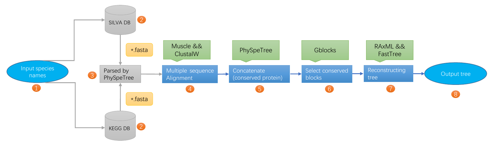

PhySpeTree: automatically reconstructing phylogenetic species tree
Introduction
Combining phylogenetic species tree with some predictions is very important in some filed. For instance, protein-protein interactions and the predictions of gene pathway new members. In this predictions the exact species tree to be reconstructed is necessary, but the process of reconstructing the species or gene tree is very tedious.
Here we developed easy-to-use package named PhySpeTree that is convenient to reconstruct species trees by one command line. The advantage is that users only need to input species names and PhySpeTree automatically downloads and analyzes sequences of SSU rRNA or HCP from about 4,000 organisms.
PhySpeTree workflow

PhySpeTree workflow includes the following steps:
-
Prepare organisms names (abbreviated name) to reconstruct species tree as species abbreviated names
-
Two parallel pipelines to reconstruct species tree, the SSU rRNA (--sran) or Highly conserved proteins (--hcp).
-
Querying, parsing and retrieving FASTA format data.
-
Multiple sequence alignment by Muscle or ClustalW.
-
Concatenate highly conserved proteins by PhySpeTree.
-
Select conserved blocks by Gblosks.
-
Reconstructing species tree by RAxML or FastTree.
-
Output reconstruct phylogenetic tree files.
Features
-
Easy to use (one command line automatically reconstruct species tree).
-
Multi-selection (select reconstruct species tree by HCP method or SSU rRNA method).
-
Adjustable parameters (the users can choice any enable parameters with corresponding invoke software).
-
Provide species names (species abbreviated names) as input only.
-
Combine best phylogenetic tree (combine multiple tree to a consensus tree).
-
View tree by iTol (easily use iview module to annotate tree).
-
Flexible (more software to be invoked with corresponding enable parameters).
-
Versatile software (can build species tree or gene tree and also ability extend new species to tree).
PhySpeTree module:
- autobuild: Automatically reconstruct phylogenetic tree
PhySpeTree autobuild -i species_name_list.txt -o Output
- build: Reconstruct phylogenetic tree
PhySpeTree build -i species.fasta -o Output
- combine: Combine multiple best phylogenetic tree
PhySpeTree combine -i multiple_tree.tree -o Output
- iview: View and annotating phylogenetic tree by iTol
PhySpeTree iview -i species_name_list.txt -o ivew -range phylum
- check:Check organisms for extend phylogenetic tree
PhySpeTree check -i organisms.txt -o checkout --protein